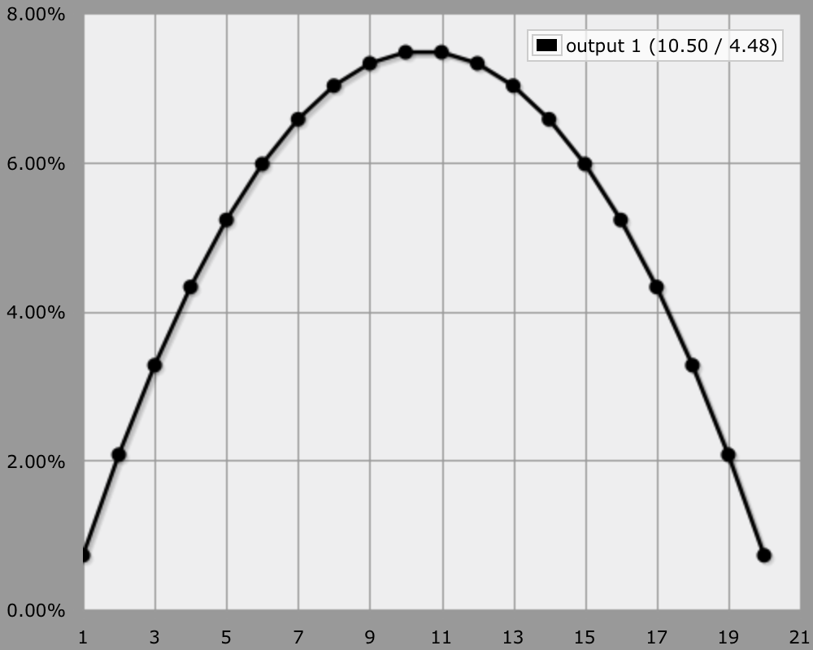
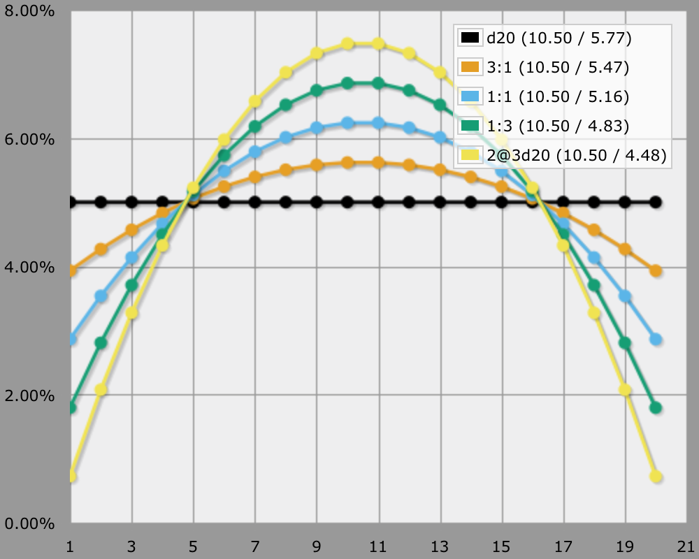
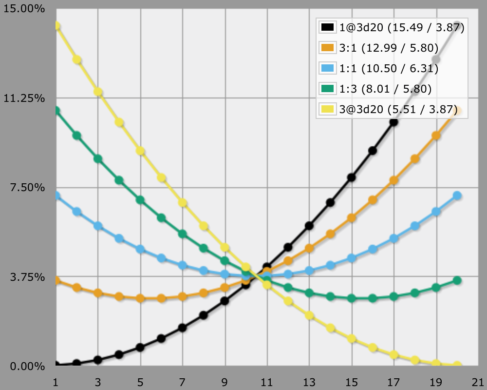
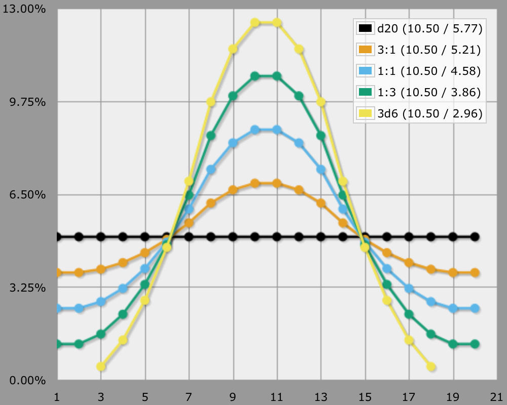

Interpolating Distributions
Mixing Probabilities
Suppose you're using a 1d20 mechanic, but would like to curve the distribution, while keeping the same 1–20 value range. Taking the middle of 3d20 is a nice solution for that. You can do that with AnyDice by using 2@3d20. But what if that curves too much for your taste?

You can interpolate between dice mechanics! You do this by varying which dice mechanic you use, either by alternating between then or by rolling a die to decide which to use each time. You can do this in one roll, for example:
Roll a d4, a red (or whatever that distinguishes it) d20, and two additional d20. If the d4 shows a 1 or a 2, your result is the value of the red d20. Otherwise, your result is the middle value of the three d20.
You can adjust the flatness of the distribution by changing how the d4 dictates which mechanic to use. With a d4, you can produce a 3:1, a 1:1, or a 1:3 selection ratio.
function: switch S:n {
if S > 0 { result: d20 }
result: 2@3d20
}
output d20 named "d20"
output [switch d4 - 1] named "3:1"
output [switch d4 - 2] named "1:1"
output [switch d4 - 3] named "1:3"
output 2@3d20 named "2@3d20"

By interpolating mechanics you can find distributions that are otherwise hard or impossible to get. For example, by rolling 3d20 and picking either the highest or the lowest value with a 1:1 ratio, you get a distribution where the extremes are more likely to be rolled than the average.
function: switch S:n {
if S > 0 { result: 1@3d20 }
result: 3@3d20
}
output 1@3d20 named "1@3d20"
output [switch d4 - 1] named "3:1"
output [switch d4 - 2] named "1:1"
output [switch d4 - 3] named "1:3"
output 3@3d20 named "3@3d20"

You can interpolate between any two mechanics, they needn't have the same value range. So, in a way, you can compromise between using 1d20 and 3d6.
function: switch S:n {
if S > 0 { result: d20 }
result: 3d6
}
output d20 named "d20"
output [switch d4 - 1] named "3:1"
output [switch d4 - 2] named "1:1"
output [switch d4 - 3] named "1:3"
output 3d6 named "3d6"

You can modify this approach in multiple ways (one of which is actually exploding dice), but take care that the final mechanic is still playable!